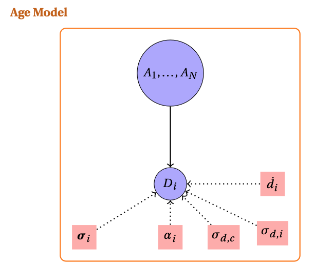
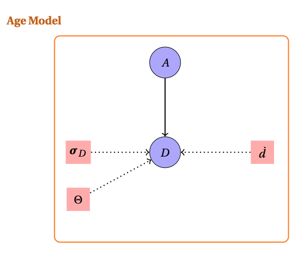
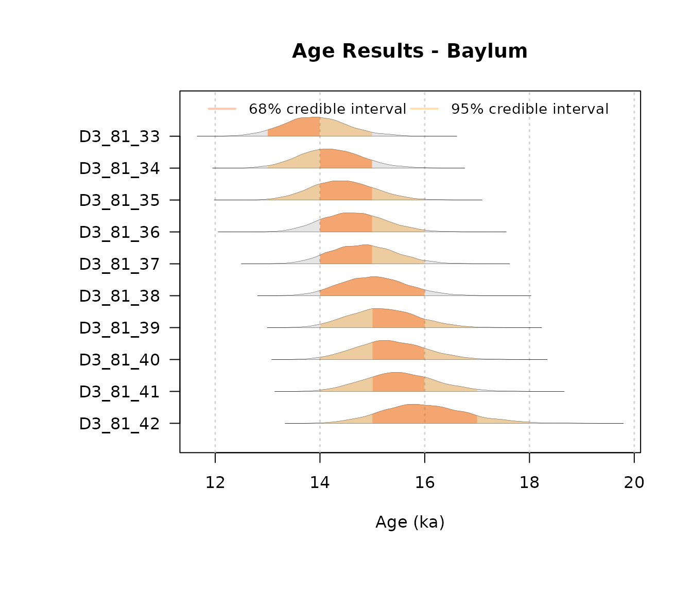
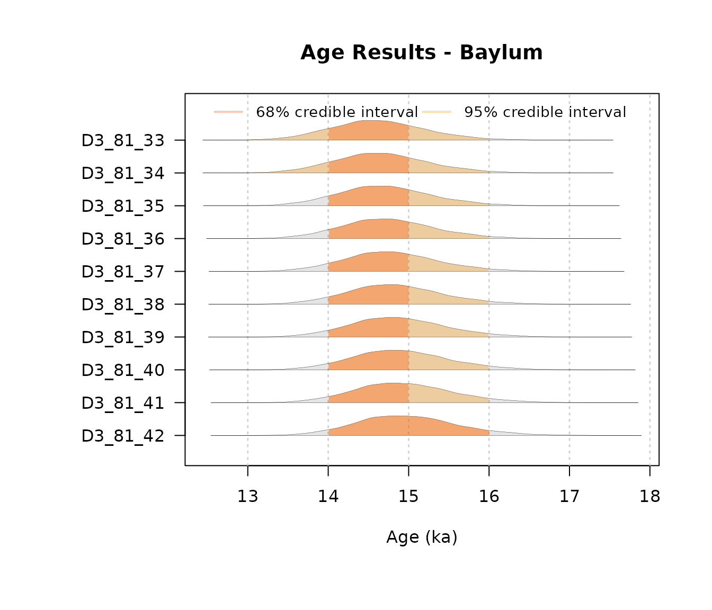
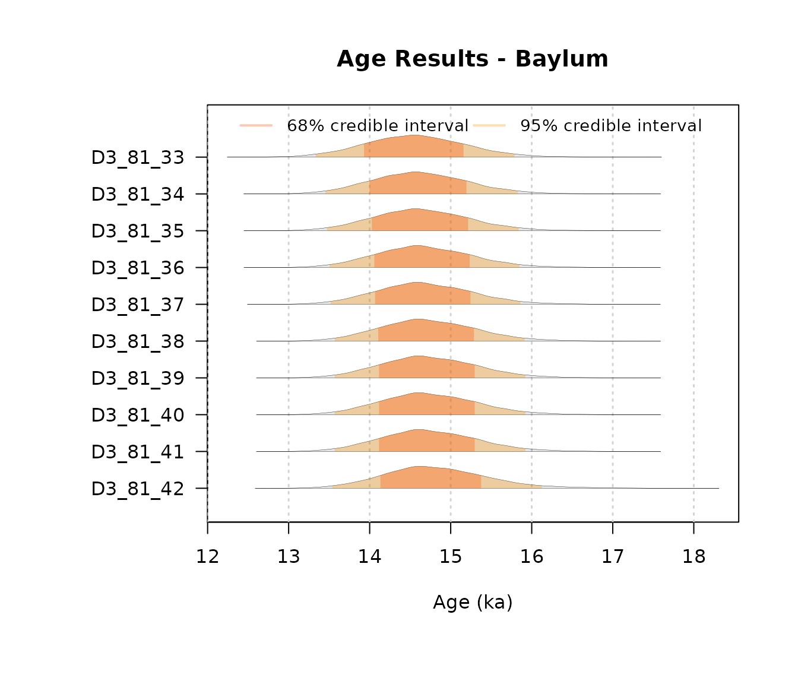
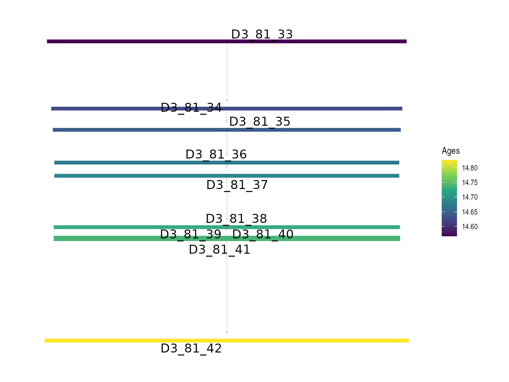
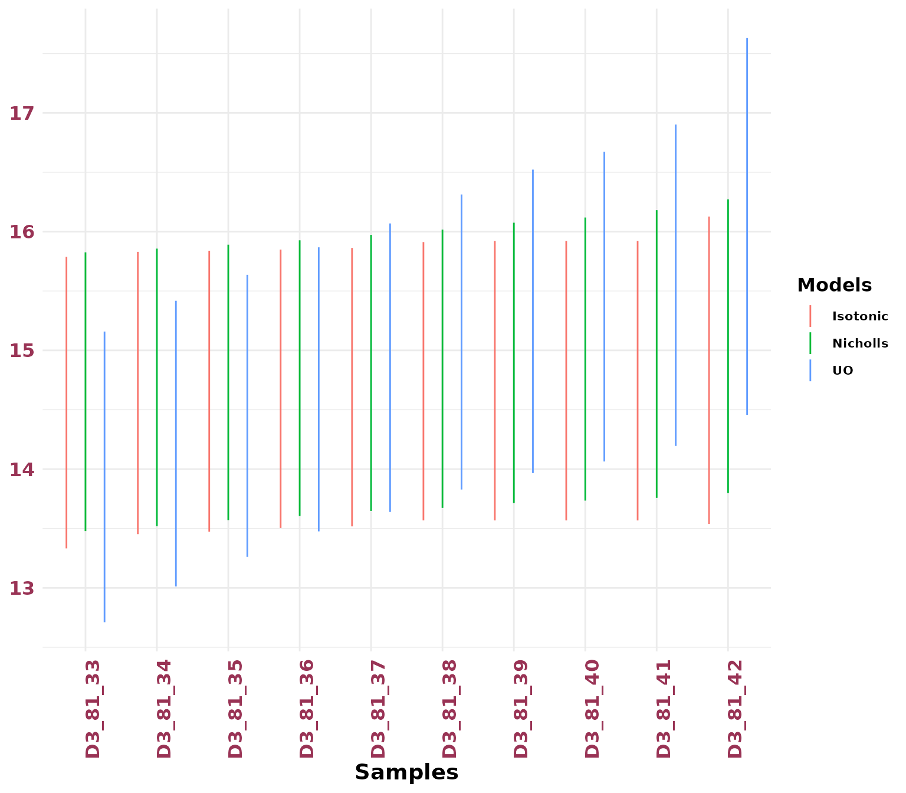

This Vignette introduces the tools in BayLumPlus that extend the original framework for age modelling.
library(BayLumPlus)
#> Loading required package: codaAge Models Function
In this section we present the splitting of the OSL Model presented in Combès and Philippe (2017). We summarize our approach in the following hierarchical model:

The model incorporates three primary data vectors:
- : the unknown ages to be estimated.
- : the equivalent doses obtained from luminescence measurements.
- : the measurement uncertainties for equivalent doses.
The environmental context is characterized by known parameters:
- : mean annual dose rates for each sample.
- : individual dose rate uncertainties.
- : contamination factors relating to systematic uncertainty.
However, this approach does not allow us to account for the complex
modeling of common errors. Therefore, instead of considering one common
error and a contamination factor, we set the
matrix which represents the covariance matrix that summarizes the
several common errors we can consider (see documentation of
create_ThetaMatrix()).
The considered model can be summarized by the likelihood:

The function allowing to compute such configuration is
Compute_AgeS_D().
In the following sections, we demonstrate how to use this function with practical examples.
Measurements quantities
The function needs parameters (see ?Compute_AgeS_D() )
such as a list of DATA composed of
- Equivalent Doses:
- Dose rate:
- Standard Error for
:
An example of what it might look like
DATA = list( D = Doses,
ddot = dose_rate,
sD = standard_error_D)Stratigraphics prior knowledge
The function can also require a matrix that summarizes the
stratigraphic constraints called StratiConstraints.
Multiple choice are accepted :
- A numeric matrix such as in create_ThetaMatrix() (meaning
with a row of ones)
- A path to a csv file
Note that several prior distributions can be tested:
-
Without stratigraphic constraints:
- unconstrained_Jeffrey
-
Under strict order:
- StrictNicholls&Jones : Nicholls & Jones applied directly to ages (see section 4 in Nicholls and Jones (2001) )
- constrained_Jeffrey : Approached Jeffreys form
For more information use help(ModelAgePrior).
For these priors there is no need to specify the parameter
StratiConstraints as it is supposed to be the
strict order or no constraints at all.
You can use the extract_Jags_model() function to check
all available models and data structures in
BayLumPlus.
To illustrate usage, the following code snippet uses the OSL dataset
from Jingbian, China
(see the package documentation for more details).
We can use the unconstrained_Jeffrey prior for our first bayesian computation. The following code snippet produces this scenario:
Output = Compute_AgeS_D(
DATA = list(D = OSLJingbian$D, sD = OSLJingbian$sD, ddot = OSLJingbian$ddot),
Nb_sample = OSLJingbian$Nb_Sample, SampleNames = OSLJingbian$SampleNames,
ThetaMatrix = OSLJingbian$ThetaMatrix, prior = "unconstrained_Jeffrey",
jags_method = "rjags",
PriorAge = rep(c(1, 1400), OSLJingbian$Nb_Sample),
Iter = 2000, burnin = 50000, t = 10
) Note that the data OSLJingbian already have the object
Output, which is the return object of the code above.
Then the following code snippet shows when we use the constrained_Jeffrey prior for the second bayesian model
JingbianUO = Compute_AgeS_D(
DATA = list(D = OSLJingbian$D, sD = OSLJingbian$sD, ddot = OSLJingbian$ddot),
Nb_sample = OSLJingbian$Nb_Sample, SampleNames = OSLJingbian$SampleNames,
ThetaMatrix = OSLJingbian$ThetaMatrix, prior = "constrained_Jeffrey",
jags_method = "rjags",
PriorAge = rep(c(1, 1400), OSLJingbian$Nb_Sample),
Iter = 2000, burnin = 50000, t = 10
)
#> Loading required namespace: rjags
#> Warning: `as_data_frame()` was deprecated in tibble 2.0.0.
#> ℹ Please use `as_tibble()` (with slightly different semantics) to convert to a
#> tibble, or `as.data.frame()` to convert to a data frame.
#> ℹ The deprecated feature was likely used in the BayLumPlus package.
#> Please report the issue at <https://github.com/imn167/BayLumPlus/issues>.
#> This warning is displayed once every 8 hours.
#> Call `lifecycle::last_lifecycle_warnings()` to see where this warning was
#> generated.Finally, the snippet code when using the StrictNicholls&Jones prior
JingbianNicholls = Compute_AgeS_D(
DATA = list(D = OSLJingbian$D, sD = OSLJingbian$sD, ddot = OSLJingbian$ddot),
Nb_sample = OSLJingbian$Nb_Sample, SampleNames = OSLJingbian$SampleNames,
ThetaMatrix = OSLJingbian$ThetaMatrix, prior = "StrictNicholls&Jones",
jags_method = "rjags",
PriorAge = rep(c(1, 1400), OSLJingbian$Nb_Sample),
Iter = 2000, burnin = 50000, t = 10
)To visualize the posterior marginals, we use the
plot_Ages() function with the "density"
mode:
AgeWith_NoConstraints = plot_Ages(OSLJingbian$Output, plot_mode = "density")
AgeWith_LogUniformOrder = plot_Ages(JingbianUO, plot_mode = "density")
AgeWith_NJ = plot_Ages(JingbianNicholls, plot_mode = "density")
Graph Network and Stratigraphic Visualization
One can visualize the order links set up by the StratiConstraints matrix in a directed acyclic graph. The following code snippet provides the scheme on how to do that:
# Create simple stratigraphic constraint matrix
create_mock_constraints <- function(n = 5) {
matrix(c(rep(1, n), ## first row of ones
c(0, 1, 1, 1, 1), rep(0, 5),
c(0,0, 0, 1, 1), c(rep(0, 4),1 ),
rep(0, 5)),
nrow = 6, byrow = TRUE)
}
reduced_network = remove_transitive_edges(create_mock_constraints())
# network visualization thanks to VisNetwork
network_vizualization(reduced_network, interactive = T, vertices_labels = paste0("A", 1:5))Isotonic Regression Computation
In this section, we introduce the function
IsotonicCurve(), which computes the isotonic distortion of
a posterior distribution obtained from the Compute_AgeS_D()
function.
The currently supported priors for this isotonic correction are unconstrained priors.
This function requires the following arguments:
-
StratiConstraints: The stratigraphic constraint matrix. This can either be provided directly or loaded from a file. If no matrix is supplied, the model assumes a strict chronological order. -
Object: The output object returned by the age model functionCompute_AgeS_D(). -
interactive: An optional argument. If not provided, the program will decide whether to display an interactive Directed Acyclic Graph (DAG) visualization in a web browser. -
level: Confidence levels for High Posterior Density (HPD) regions. The default values are0.95and0.68. -
path: An optional path for saving the constraints DAG.
IsotonicDistorsion = IsotonicCurve(c(), OSLJingbian$Output,interactive = FALSE)The function return a BayLum.list of three objects
including the data.frame Ages:
knitr::kable(IsotonicDistorsion$Ages )| AGE | SD | MAP | SAMPLE | Unit | HPD68.MIN | HPD68.MAX | HPD95.MIN | HPD95.MAX |
|---|---|---|---|---|---|---|---|---|
| 14.56640 | 0.6204945 | 14.57735 | D3_81_33 | 1 | 13.93046 | 15.15805 | 13.33240 | 15.78758 |
| 14.62468 | 0.6011556 | 14.92333 | D3_81_34 | 2 | 13.99632 | 15.19499 | 13.45238 | 15.82958 |
| 14.64308 | 0.5981044 | 14.92333 | D3_81_35 | 3 | 14.02716 | 15.21501 | 13.47349 | 15.83914 |
| 14.67149 | 0.5942739 | 15.32788 | D3_81_36 | 4 | 14.05763 | 15.23509 | 13.50413 | 15.84897 |
| 14.68294 | 0.5936036 | 15.16745 | D3_81_37 | 5 | 14.06657 | 15.24406 | 13.51774 | 15.86274 |
| 14.72749 | 0.5947493 | 14.27799 | D3_81_38 | 6 | 14.10549 | 15.28701 | 13.56844 | 15.91195 |
| 14.73667 | 0.5958971 | 14.27799 | D3_81_39 | 7 | 14.11504 | 15.29682 | 13.56810 | 15.92189 |
| 14.73669 | 0.5959068 | 14.27799 | D3_81_40 | 8 | 14.11504 | 15.29682 | 13.56810 | 15.92190 |
| 14.73789 | 0.5965943 | 14.27799 | D3_81_41 | 9 | 14.11491 | 15.29685 | 13.56790 | 15.92200 |
| 14.82587 | 0.6545128 | 14.35457 | D3_81_42 | 10 | 14.13225 | 15.37595 | 13.53841 | 16.12666 |
Similary to the compute_AgeS_D() function, the posterior
marginals can be visualized with `plot_Ages()``
AgeWith_IR <- plot_Ages(object = IsotonicDistorsion, plot_mode = "density")
Note that the isotonic regression is computed following the Sequential Merging Block (SBM) algorithm presented in Wang et al. (2022).
To visualize the resulting posterior densities from the Isotonic
Distorsion, we can use the function PlotIsotonicCurve()
:
JingbianPlots = PlotIsotonicCurve(object = IsotonicDistorsion, level = .68)The DAG constructed from the StratiConstraints matrix shows segments whose length represents the confidence interval (at the specified level) and gradient colors represent the age values for each sample. The y-axis has the same scale as the Bayesian mean estimators.
JingbianPlots$DAG
A ribbon plot showing the HPD regions of the distorted posterior distribution
JingbianPlots$ribbon
It is important to choose a level of HPD region / Credible interval
already computed by IsotonicDistorsion() otherwise, the
function return an error message.
HPD Regions Plotting
We can compare multiple priors using the plotHpd()
function. This function requires two main arguments:
-
listObject: A list of output objects returned byCompute_AgeS_D()using different prior settings.
-
Names: A character vector specifying the names for each age computation method, used to distinguish them in the plot.
